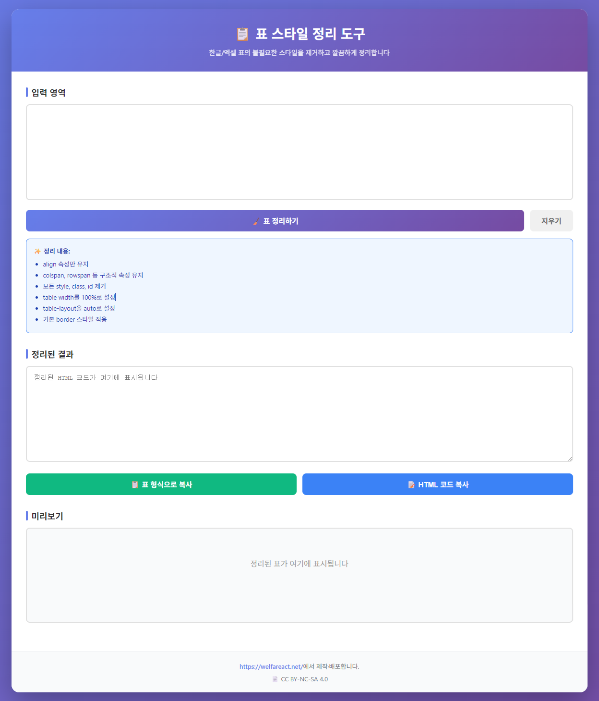

표 스타일 정리 도구 (Table Styler)
엑셀이나 웹 페이지의 표를 한글(HWP) 또는 워드 프로그램에 붙여넣을 때 생기는 불필요한 서식과 잡다한 코드를 말끔히 정리해주는 도구입니다. 업무 보고서 작성 시 표 레이아웃이 깨지는 문제를 해결하여 문서의 완성도를 높여줍니다.
✨
깔끔한 서식 정리
복잡한 HTML 태그와 불필요한 인라인 스타일을 제거하여 텍스트 데이터만 남깁니다.
💻
멀티 플랫폼 지원
웹 브라우저에서 바로 실행하거나, 오프라인 환경을 위한 Windows 프로그램으로 활용 가능합니다.

표 서식 정리 실행 예시
💡 제작 가이드 및 소스 코드
이 도구가 어떻게 작동하는지 궁금하시거나 소스 코드를 직접 수정하여 활용하고 싶은 사회복지사분들을 위해 가이드를 공유합니다.
구글 문서에서 소스 보기 →